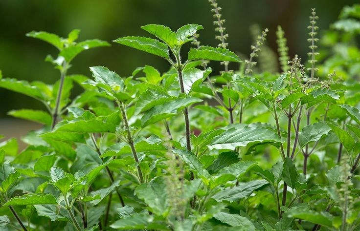

Benefits of Tulsi
Tulsi is a versatile herb known for its numerous health benefits. Here are some of the key benefits:
- üåø Relieves Bloating & Gas: Reduces stomach gas and discomfort by promoting healthy gut function.
- üî• Improves Digestion: Stimulates the release of digestive enzymes and juices.
- üåæ Soothes Acid Reflux: Neutralizes stomach acid, reducing heartburn and indigestion.
- üíß Prevents Constipation: Acts as a mild laxative, improving bowel movements.
- üåø Reduces Stress: Boosts immunity and fights infections.
Ways to Use Tulsi
Tulsi can be used in various forms to harness its benefits:
- ✅ Tulsi Tea: For bloating and acid reflux.
- ✅ Tulsi & Ginger Tea: For nausea and indigestion.
- ✅ Tulsi Seed Water: For detox and gut health.
Precautions
While Tulsi is beneficial, it's important to use it wisely:
- ❗ Don’t Overconsume: More than 2–3 cups of tea daily may lower blood sugar levels.
- ⚠️ Mild Heartburn: May occur if taken in excess.
 0
0